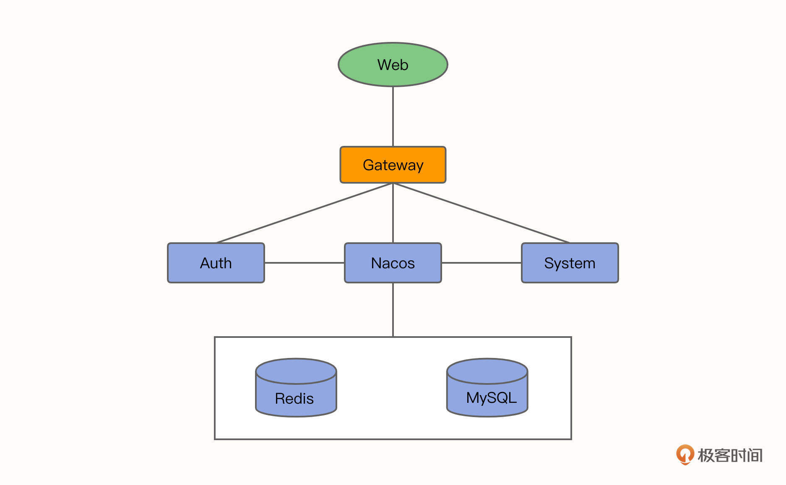
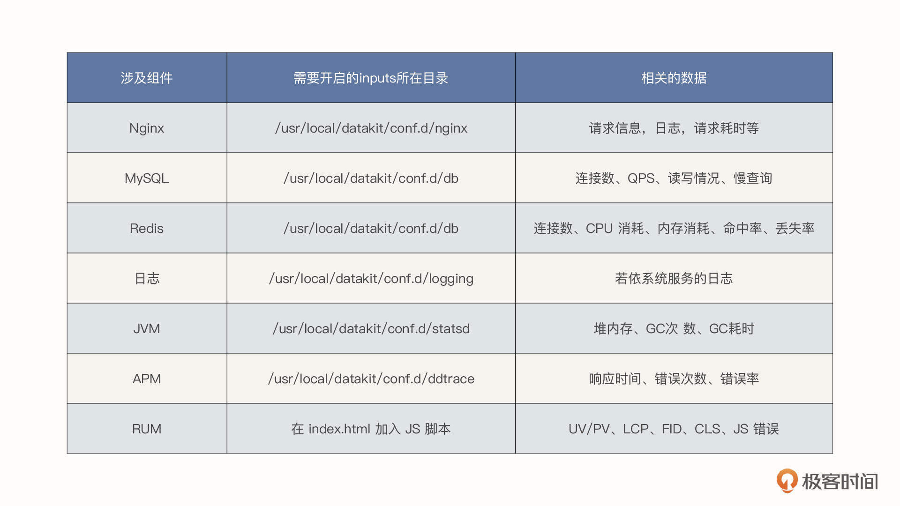
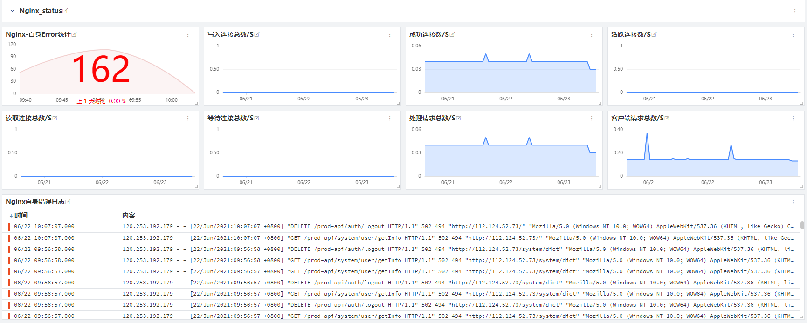
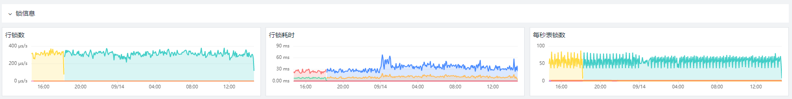
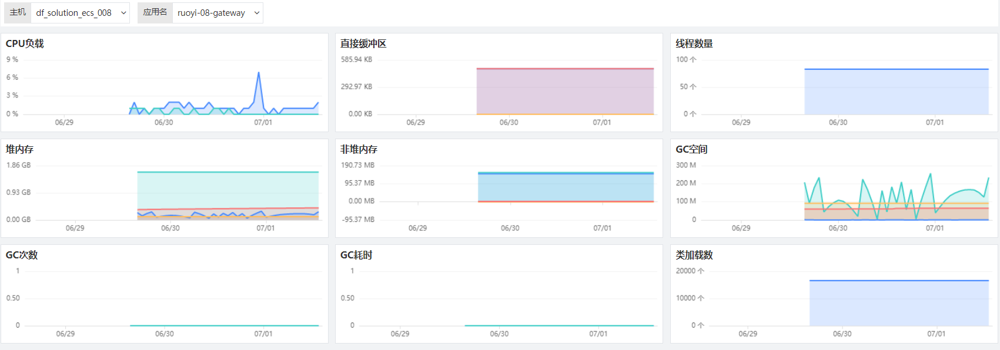
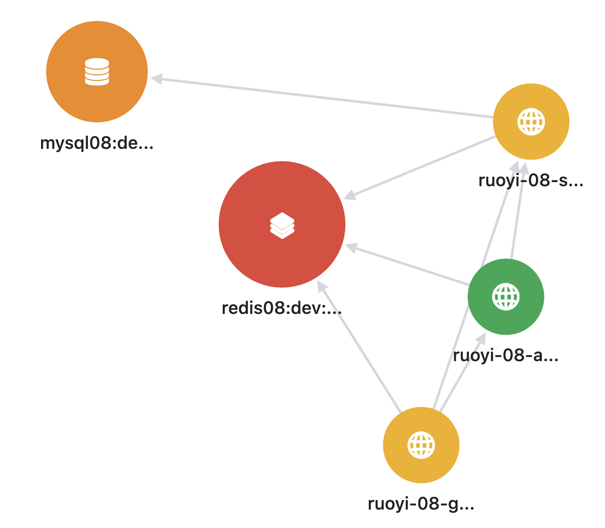
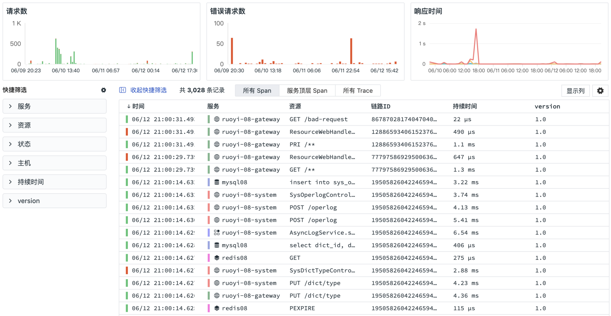
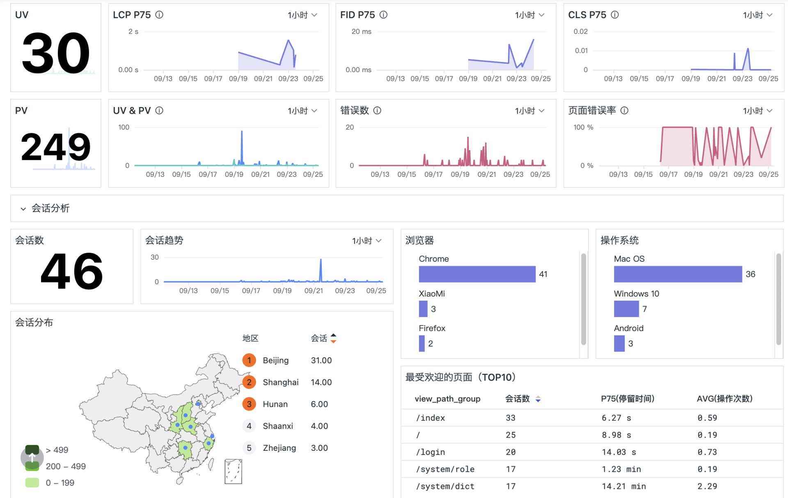
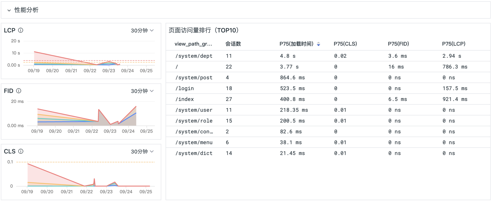
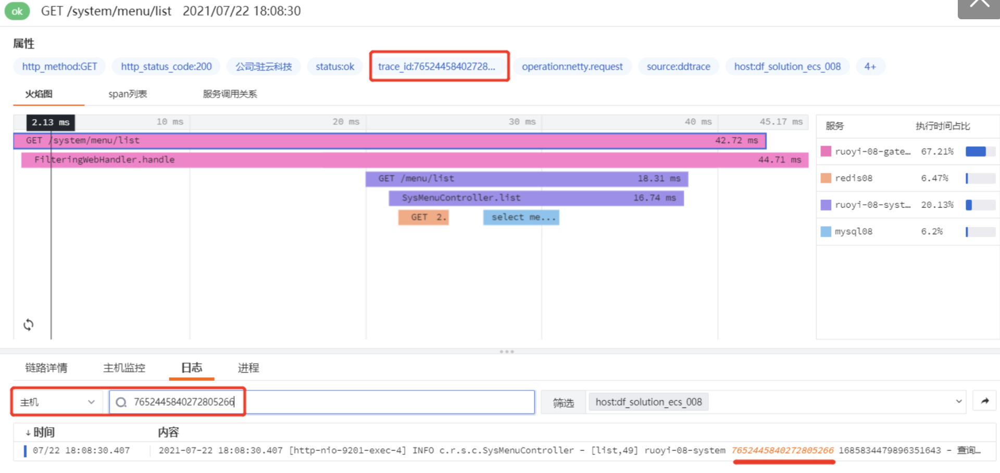

- 00 开篇词 可观测性，让开发和维护系统的你每晚都能睡个好觉！.md.html
- 01 以史鉴今：监控是如何一步步发展而来的？.md.html
- 02 基本概念：指标+日志+链路追踪=可观测性？.md.html
- 03 相互对比：可观测性和传统监控有什么区别？.md.html
- 04 OpenTelemetry：如何利用OpenTelemetry采集可观测数据？.md.html
- 05 构建可观测平台：应该购买商业产品还是自己搭建？.md.html
- 06 团队合作：不同团队如何高效共建可观测性？.md.html
- 07 软件开发：如何利用可观测性进行驱动？.md.html
- 08 建立 SLO：如何为系统可靠性的量化提供依据？.md.html
- 09 跟踪 SLO：如何基于错误预算采取行动？.md.html
- 10 实战 1：从 0 到 1 建立系统应用的可观测性.md.html
- 11 实战 2：基于可观测性数据进行问题分析和根因定位.md.html
- 12 实战 3：构建基于 Kubernetes 的系统可观测性.md.html
- 13 实战 4：建立软件持续集成和发布的可观测性.md.html
- 14 文化建设：如何构建可观测性的文化和框架_.md.html
- 15 展望未来：可观测性在未来的发展趋势是什么？.md.html
- 结束语 在实践中，用科学的方法分析和解决问题.md.html
- 捐赠
10 实战 1：从 0 到 1 建立系统应用的可观测性
你好，我是翁一磊。
在前面的课程里，我们学习了很多可观测性的理论知识。那基础打好了，接下来就要真刀真枪地建立系统开始实战了。
这节课，我会基于一个典型的Spring Cloud的应用，给你讲解如何从 0 到 1 来构建端到端的全链路可观测性，如何打通可观测性数据的联合。
实战业务系统简介
我们这个实战项目采用的系统是若依系统，这是一套开源的后台管理系统，同时也是一个 Java EE 企业级快速开发平台，它由多个微服务组成，内置模块诸多，如：部门管理、角色用户、菜单及按钮授权、数据权限、系统参数、日志管理、通知公告等。如果需要项目的开源地址和演示地址，你可以点开链接查看。
若依系统的架构主要包括下面几类。
- Web 页面：放置在 Nginx 中。
- 注册中心：Nacos。
- 网关：Gateway。
- 服务模块：Auth、System。
- 数据库：MySQL。
- 缓存：Redis。

项目中涉及的技术栈如下表所示：

提醒一下，我们为了构建可观测性实战选择的是单机 Jar 包版应用，它可以将所有服务模块都部署在同一台服务器上，利用不同端口对服务进行访问。
建立业务系统的可观测
概述
接下来，我们就一起针对若依这个系统建立可观测性。市面上有不少的开源工具可供选择，但是从某种意义上来说，目前并没有一个开源工具能够完整地解决可观测性的问题，基本都需要把多个工具拼凑到一起来用。在遇到一些业务问题时，仍然需要访问不同的工具来分析问题，相关的日志、链路以及指标数据也没有很好地融合，这样的操作并不能有效减轻运维以及开发人员的分析调试成本和沟通成本。
而观测云是一款专门为 DevOps 团队打造的可观测平台，它可以让包括开发、测试、运维在内的所有团队在一套统一的可观测数据体系下客观分析与定位故障问题，便于高效地协作。因此在这个实战的课程中，我会通过观测云来具体介绍一下可观测性的建立过程和使用效果，将指标、链路、日志所有的可观测数据采集、关联以及整合分析，实现系统完整的可观测性。你可以免费注册一个账号，跟我一起实战演练。
DataKit 是观测云的数据采集器，它不仅支持将数据传输到观测云，也兼容其他的后端存储。针对若依系统，我们会采集 Nginx和MySQL 等技术栈相关的指标和日志、若依系统的服务日志、应用性能监测 APM以及用户访问监测 RUM，最终通过 DataKit 将这些数据有效地关联起来。我把需要采集的数据列了一张表格：

下面我们将针对各项技术栈一一进行介绍。
Nginx
Nginx 相信你已经比较熟悉了。因为Nginx 的应用场景广泛，所以对大部分企业来说还是很重要的。如何保障 Nginx 的健康与稳定也是企业内部的运维人员非常关心的一件事。
Nginx 自身提供了不少数据源可以反馈自身的状态。比方说，Nginx 自带的性能指标模块 with-http_stub_status_module 就可以直接获取 Nginx 相关的数据（例如请求连接数、处理连接数等）。同时， Nginx 日志（包括 access.log 和 error.log）可以用来进行具体的请求层面的分析，像 PV 数量、UV 数量、请求错误统计等。性能指标与日志的结合就可以快速了解 Nginx 自身的很多状态。
但是，文本类的日志数据格式观看起来既不方便也不美观，更重要的是，这些数据格式不能实时反映 Nginx 相关请求数或服务器请求状态的变化趋势。我们可以通过采集 Nginx 的性能状态和日志，把数据放到同一平台同一界面展现出来，借此提高使用人员的工作效率。
Nginx 相关的数据展现效果如下（这是观测云内置的仪表盘，你也可以根据自己的需要，通过内置的各种视图部件进行自定义），这样可以将日志信息形成指标，同时也能展现客户端请求的数据。
另一方面，观测云中的仪表盘并不仅仅只是静态的视图，我们还可以进行相关的下钻跳转，从而从更多维度对数据进行分析。在这节课，我们主要介绍数据的接入。下一讲，我会进一步讲解接入之后，如何分析问题。


上图展现的是观测云中提供的内置视图模板。下面我们来解读一下具体的接入方式。
在 Nginx 的所在的主机中安装好 DataKit 之后，（或是通过 DaemonSet 部署来支持 Kubernetes 环境），需要进行几步简单的配置：
安装 Nginx 的 with-http_stub_status_module 模块；
在 Nginx.conf 中增添 nginx_status 的 location 转发；
\( cd /etc/nginx ## nginx 路径根据实际情况而定 \) vim nginx.conf
$ server{
listen 80; server_name localhost; ##端口可自定义 location /nginx_status { stub_status on; allow 127.0.0.1; deny all; } }启用 DataKit 的 Nginx.conf，并修改 inputs：
\( cd /usr/local/datakit/conf.d/nginx/ \) cp nginx.conf.sample nginx.conf $ vim nginx.conf
#修改如下内容 [[inputs.nginx]]
url = http://localhost/nginx_status[inputs.nginx.log]
files = ["/var/log/nginx/access.log","/var/log/nginx /error.log"]#保存文件后重启 datakit
$ service datakit restart
MySQL
再来看下MySQL。MySQL 监测场景主要展示了 MySQL 的基础信息、链接信息、存储空间信息、InnoDB 信息、性能信息、锁信息以及日志信息（包括 /var/log/mysql/*.log）。一般来说，需要为监测 MySQL 创建一个单独的账号，赋予该用户在本地或远程读取数据的权限。
MySQL的详细配置在这里就不多说了，它跟 Nginx 类似，只要修改 DataKit 的 MySQL inputs 就可以了。具体可以参考相关文档。
采集好数据后，可以在观测云上看到这样的仪表盘（类似 Nginx、MySQL 的仪表盘，也可以自定义修改）：



Redis
监视 Redis 可以帮助你在两个方面发现问题：Redis 本身的资源问题以及支持基础架构中其他地方出现的问题。我们可以从下面几个维度中对 Redis 进行监测：性能指标、内存指标、基本活动指标、持续性指标、以及错误指标。Redis 的详细配置可以参考相关文档。
采集数据之后，在观测云可以汇总出下面这样的仪表盘（类似 Nginx、Redis 仪表盘，也可以自定义修改）：

JVM
这里只要在 Datakit 中启用 JVM 的 inputs 即可，不需要进行修改。Java 应用启动的脚本，将在待会进行详细的介绍。
$ cd /usr/local/datakit/conf.d/statsd/
$ cp statsd.conf.sample ddtrace-jvm-statsd.conf
$ vim ddtrace-jvm-statsd.conf
# 默认不需要修改
数据采集完毕后，在观测云可以汇总出如下界面：

日志采集
这一步采集的不仅仅是标准日志（ Nginx、MySQL、Redis 等），也包括业务日志，例如，若依系统就有 system 服务日志。
你可以通过下面这样方式来配置日志采集。
$ cd /usr/local/datakit/conf.d/log/
$ cp logging.conf.sample logging.conf
$ vim logging.conf
## 修改 log 路径为正确的应用日志的路径
## source 与 service 为必填字段，可以直接用应用名称，用以区分不同的日志名称
[inputs.logging]
logfiles = [
"/usr/local/ruoyi/logs/ruoyi-system/error.log",
"/usr/local/ruoyi/logs/ruoyi-system/info.log",]
source = "ruoyi-system"
service = "ruoyi-system"
pipeline = "ruoyi-system.p"
这里的 Pipeline 就是 grok 语句（如下所示），主要用来解析文本日志， 将日志中的各个字段提取出来，形成结构化的数据。
$ cd /usr/local/datakit/pipeline/
$ vim ruoyi_system.p
##示例：
#日志样式
#2021-06-25 14:27:51.952 [http-nio-9201-exec-7] INFO c.r.s.c.SysUserController - [list,70] ruoyi-08-system 5430221015886118174 6503455222153372731 - 查询用户
##示例 grok，复制如下内容至 ruoyi_system.p 中
grok(_, "%{TIMESTAMP_ISO8601:time} %{NOTSPACE:thread_name} %{LOGLEVEL:level} \\s+%{NOTSPACE:class_name} - \\[%{NOTSPACE:method_name},%{NUMBER:line}\\] %{DATA:service} %{DATA:trace_id} %{DATA:span_id} - %{GREEDYDATA:msg}")
default_time(time)
应用性能监测 APM
APM 的全称是应用性能监测（Application Performance Monitoring），这是一种随着互联网的发展衍生出的监控技术，它的存在就是为了解决互联网用户高并发、大流量带来的应用性能瓶颈问题，从开发和运维的角度将应用程序的层层调用逻辑透明化，从而方便企业快速进行故障定位，降低 MTTR（Mean time to repair，平均故障修复时间），提升整体的用户体验。
从本质上讲，APM 与 NPM（旁路监听）、日志等部署方式有比较大的区别，应用场景也略有不同。APM 的部署方式往往是侵入式的（字节码注入或者 AOP），主要是为了方便研发和运维查看系统整体运行状态、健康程度以及资源消耗或异常问题（包括外部 API 、数据库调用、自身更细粒度的代码及方法调用），它更偏向于应用侧的系统性能及稳定性保障。
观测云目前支持所有支持 Opentracing 协议的 APM 监控工具，例如市面上比较流行的 Skywalking、Zipkin、Jaeger、ddtrace 等，以及 OpenTelemetry。具体接入方式也与原工具接入方式一致，同时在 DataKit 中开启对应的采集配置，就可以将链路数据打至观测云了。
这里，我们使用 DataDog 的开源 ddtrace-agent 实现数据采集。需要先 kill 掉原有应用启动进程，然后添加 ddtrace 参数，重启应用。可以使用 ps -ef | grep ruoyi 来查找若依系统的进程。
添加 ddtrace-agent 后的应用启动脚本示例如下（观测云支持 ddtrace 作为 APM 的探针来收集数据）：
$ cd /usr/local/ruoyi/
$ nohup java -Dfile.encoding=utf-8 -javaagent:dd-java-agent-0.80.0.jar -XX:FlightRecorderOptions=stackdepth=256 -Ddd.logs.injection=true -Ddd.service=ruoyi-gateway -Ddd.service.mapping=redis:redis_ruoyi -Ddd.agent.port=9529 -Ddd.jmxfetch.enabled=true -Ddd.jmxfetch.check-period=1000 -Ddd.jmxfetch.statsd.port=8125 -Ddd.version=1.0 -jar ruoyi-gateway.jar > logs/gateway.log 2>&1 &
$ nohup java -Dfile.encoding=utf-8 -javaagent:dd-java-agent-0.80.0.jar -XX:FlightRecorderOptions=stackdepth=256 -Ddd.logs.injection=true -Ddd.service=ruoyi-auth -Ddd.service.mapping=redis:redis_ruoyi -Ddd.env=staging -Ddd.agent.port=9529 -Ddd.jmxfetch.enabled=true -Ddd.jmxfetch.check-period=1000 -Ddd.jmxfetch.statsd.port=8125 -Ddd.version=1.0 -jar ruoyi-auth.jar > logs/auth.log 2>&1 &
$ nohup java -Dfile.encoding=utf-8 -javaagent:dd-java-agent-0.80.0.jar -XX:FlightRecorderOptions=stackdepth=256 -Ddd.logs.injection=true -Ddd.service=ruoyi-modules-system -Ddd.service.mapping=redis:redis_ruoyi,mysql:mysql_ruoyi -Ddd.env=dev -Ddd.agent.port=9529 -Ddd.jmxfetch.enabled=true -Ddd.jmxfetch.check-period=1000 -Ddd.jmxfetch.statsd.port=8125 -Ddd.version=1.0 -jar ruoyi-modules-system.jar > logs/system.log 2>&1 &
建立APM 之后，可以自动发现服务的拓扑、互相间的关系，还能查看链路的详细信息：



用户访问监测 RUM
我们再来看下RUM。
RUM全称是 Real User Monitoring，用户访问监测。随着移动互联网的发展，越来越多的企业最终的业务表现形式都汇聚到了终端用户侧，也就是RUM端。具体形式有 Mobile App、Web页面、小程序（微信、支付宝、头条）等。真实用户的终端体验会直接影响终端用户的新增、留存、企业形象甚至企业的营收。
那如何提升终端用户的使用体验呢？这是互联网行业乃至正在逐步进行数字化转型的传统企业必须要考虑的一个问题。
RUM采集数据的方式经过了好几代变更。目前市面上常见的是基于 W3C（万维网联盟）定义的 navigation-timing 标准，该标准详细定义了各种浏览器事件，通过浏览器事件的简单计算就可以算出来前端页面的首屏、白屏、DOM 加载、HTML 加载等时长，能够比测试环境的 F12 检查者模式更有效地收集生产环境中真实用户的前端体验，因此在当前 H5 应用场景越来越多的情况下极为流行。国内的很多商业软件都是依赖这个标准定制的 Web 监测体系。
但是，随着浏览器（尤其是 Chrome）以及前端技术的发展，navigation-timing 的局限性越来越明显。例如，前后端分离下单页面越来越多，在这种场景下，基于 navigation-timing 进行数据采集会比较繁琐。因此，W3C 又推出了一个新的标准 PaintTiming-github。
这个标准新提出了一些指标，包括：首次绘制（First Paint）、首次内容绘制（First Contentful Paint）等。这些指标能够更真实地反映用户在访问 Web 页面时的真实体验。我们这个示例采用的就是支持 PaingTiming 规范的数据采集。如果你对这个规范感兴趣，可以进一步阅读 《使用 Paint Timing API 提高性能》 《使用 Paint Timing API》这两篇文章。
我们可以在前端页面 index.html 中接入 RUM 可观测性 JavaScript 文件：
$ cd /usr/local/ruoyi/dist/
// 记得备份
$ cp index.html index.html.bkd
// 在 index.html 中添加 df-js
// 复制 DF 平台上的 js 内容，放至 index.html 内的 </head> 之前，然后保存文件,示例如下
$ vim index.html
<script src="https://static.dataflux.cn/browser-sdk/v2/dataflux-rum.js" type="text/javascript"></script>
<script>
window.DATAFLUX_RUM &&
window.DATAFLUX_RUM.init({
applicationId: 'xxxxxxxxxxxxxxxxxxxxxxxxxx',
datakitOrigin: 'xxx.xxx.xxx.xxx:9529',
env: 'test',
version: '1.0.0',
trackInteractions: true,
allowedDDTracingOrigins:["xxx.xxx.xxx.xxx"]
})
</script></head>
请注意，上述代码中的 “xxx” 都需要根据实际情况进行更改，更改说明如下。
- datakitOrigin：datakit 地址（datakit 所在服务器的 IP 或域名），观测云中 RUM 数据流向为：rum.js 文件 -> datakit -> dataway -> 观测云平台，如果是生产环境，需要将该 IP 设置为域名或 SLB 地址，测试环境需填写内网IP，对应 datakit 的服务器 9529 端口。
- trackInteractions：用户行为采集配置项，可实现页面端用户操作行为统计。
- allowedDDTracingOrigins：打通前后端（RUM 与APM）的配置项，可按需进行设置，需在此处填写与前端页面有交互关系的后端服务器所对应的域名或IP。
这样在若依系统页面有访问之后，就可以在观测云的用户访问监测模块看到数据：


RUM 与 APM 数据打通
在我们分析问题的时候，很多情况下需要综合前端 RUM 和后端 APM 的情况来做关联分析，所以打通 RUM 和 APM 的数据是非常必要的。
要打通数据，需要在前端 HTML 中已添加的 df-rum-js 中添加 allowedDDTracingOrigins 标签，并填写前端对应的后端域名，例如要在 testobservability.local 添加 RUM 监控，需要在 allowedDDTracingOrigins 里配置 https://www.testobservability.local。如果存在多个域名，则需要把这些域名都进行配置，用逗号隔开，第三方域名可以不配置。
日志与 APM 实现关联
同样，为了构建数据联合的可观测性，我们也要把日志和应用性能监测关联起来，我们需要修改应用日志的输出格式（需开发介入）。例如，如果应用日志输出格式文件为 logback/log4j，ddtrace-agent java-0.70 版本后会自动将跟踪标识注入，只需要修改 logback/log4j 的 XML文件，在应用日志的输出内容中添加 trace_id 字段即可。更详细的说明你可以参考 datadog 官方文档。
## 首先在 pom.xml 的 dependency 中引入 datadog 依赖
<dependency>
<groupId>com.datadoghq</groupId>
<artifactId>dd-java-agent</artifactId>
<version>0.83.0</version>
</dependency>
## 0.83.0 为对应 agent 版本号，请查看datakit/data 中的 agent 版本号

将日志和 APM 关联到一起之后，在 APM 链路数据下方的日志模块直接搜索 trace_id，就可以查看此次链路调用对应产生的应用日志了。

小结
在这一讲中，我为你介绍了如何针对一个微服务系统，从指标、日志、链路追踪、前端用户访问等各维度来采集可观测性的数据，并建立数据之间的关联性。
有了这些数据之后，下节课，我们就可以利用它们分析和排查问题了。
课后题
在这节课的最后，我留给你一道作业题。
请根据我们这节课的内容，搭建一个测试环境。你也可以选择一个开源或是你正在维护的系统，来采集和展现可观测性相关的数据。
欢迎你在留言区和我交流讨论，我们下节课见！
© 2019 - 2023 Liangliang Lee. Powered by gin and hexo-theme-book.